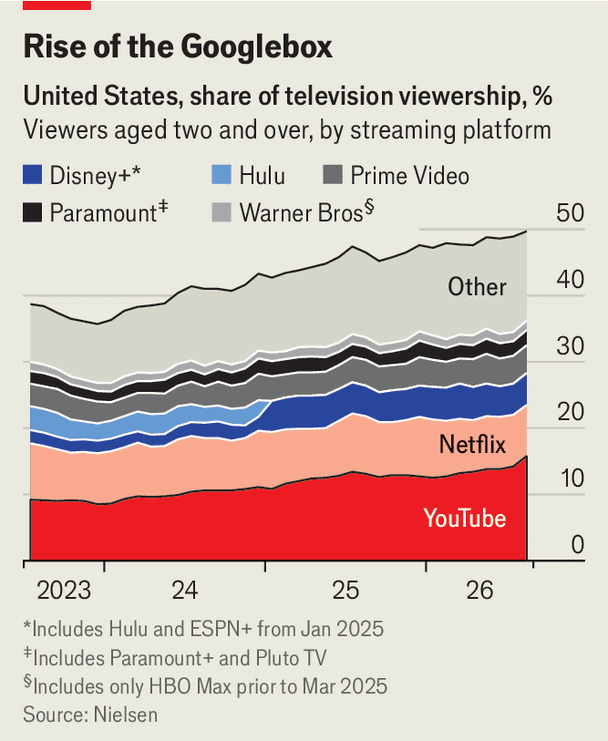

YouTube’s dominance has Hollywood running scared
Studios and streamers alike are struggling to respond to its success
Nov 12th 2026IN THE MOVIE industry, there are two competing storylines. The darker one —call it old Hollywood—prevailed on November 9th when Skydance, the newly formed combination of Paramount and Warner Bros, laid out plans to reduce its $87bn debt. Like other media giants, such as Netflix, its near future is one of attrition and job cuts, glossed over by promises of big hits to come. The other storyline—call it new Hollywood—is less well known and more upbeat. It is made on YouTube.
To glimpse it, your correspondent travelled to an unmarked building in the Hollywood hinterland of Burbank, home to the new 32,000 square-feet studio of Smosh, a YouTube comedy channel as old as the video platform itself. The precise whereabouts are kept secret to deter over-zealous fans. Suffice to say, it is not glitzy. Similarly, Smosh’s comedy has less polish than prestige TV. Yet it is a YouTube sensation. Smosh has more than 45m followers across its channels, revenue that has grown fivefold in the past three years and a headcount that has tripled to 100, says Alessandra Catanese, its boss. “I’ve been making this joke lately, but I’m totally serious. Paramount, Disney and Netflix: their layoffs are our draft,” she says.
Burbank is home to much of this YouTube demi-monde. Its scruffy creators are not big enough to offset the malaise of old Hollywood. But they have started to rattle the incumbents, which have been forced to battle YouTube for screen time in part by imitating its ways. Whether what some call “YouTube panic” is working is debatable. Yet it may be unavoidable. In the words of Mark Fischbach (aka Markiplier), who earlier this year mobilised his 40m-odd YouTube followers to turn his self-financed horror film “Iron Lung” into a box-office hit, “YouTube is the thousand-pound monster lurking over everyone’s shoulder.”

YouTube’s effect on the media zeitgeist has been palpable this year. After “Iron Lung”, two young directors who honed their craft on YouTube released “Backrooms” and “Obsession”, which became blockbuster films. The platform’s disruptive force has become increasingly evident on TV. Nielsen, a data gatherer, measured YouTube’s share of America’s TV watching at 15.8% in August, almost as much as Netflix and the streaming services of Disney, Paramount and Warner Bros combined (see chart). That is double its level in early 2023, when YouTube overtook Netflix as the biggest streamer. When it comes to attention, “YouTube is by far the biggest winner,” says Ernesto Pagano of BCG, a consultancy.
The platform’s economic heft is becoming more apparent, too. For the first time this year it disclosed annual revenue, reporting $60bn from ads and subscriptions in 2025. That was more than Netflix’s $45bn and far more than other streaming platforms. KPMG, an accounting firm, estimates that it easily outspent its peers on content last year, shelling out $28bn, compared with, say, $18bn at Netflix. The more content YouTube streams, the more data it has to improve its algorithm, further boosting viewer engagement—and revenue.
YouTube’s megabucks enable it to throw its weight around in ways that challenge Hollywood’s incumbents. It is investing in more traditional fare such as sports. Next year it will offer the ad-supported tier of Peacock, the streaming service of NBCUniversal, at no charge for its Premium subscribers. Its creators, as they earn more money, are pouring it back into making longer, more professional shows.
YouTube benefits from a business model that has less risk than that of its rivals. Whereas studios and streamers pay upfront to commission content, and own or license the resulting work, YouTube usually pays nothing in advance. Instead it takes a 45-55% cut of ad revenue and channel subscriptions. This pay-for-performance approach makes YouTube less of a hostage to fortune than its peers, who can waste huge sums on films that bomb.
The platform’s ownership by Google, a pioneer in artificial intelligence, has also helped it to develop new technology to support creators. AI tools offered by YouTube are used to simplify editing, autodub content into other languages and automatically tag products that appear in clips. Many in Hollywood fret about leaning too heavily on AI, because surveys suggest it turns audiences off. But while other streamers such as Netflix use the technology to trim production costs, YouTube leads the way in using it to boost revenue—for its creators and itself.
YouTube’s growing clout has stirred a belated fightback. Several streaming services, including Netflix and Disney Plus, have introduced swipeable short-form vertical videos similar to YouTube Shorts. Last year Ted Sarandos, Netflix’s co-chief, dismissed the creator community as a place for “killing time”. Now he is eating his words. Netflix has pledged $1bn over three years for deals with creators, according to LightShed Partners, a media-research firm. In some cases it is paying lavish sums upfront for new shows. Next year, for instance, it plans to stream a kids’ competition by Mark Rober, a YouTube science geek, that an insider at the company describes as “Pop Idol for scientists”. With Netflix’s support, the budget is said to be equal to what Mr Rober normally spends on content in a year.
The poaching extends beyond creators to YouTube executives. In October Sony Pictures, one of Hollywood’s biggest studios, named Fede Goldenberg, who at YouTube helped bring “Iron Lung” and other hits to the big screen, as head of one of its film divisions. The hope is that he will turn more creators into film-makers.
Evidence for the success of Hollywood’s response is so far mixed. Netflix’s share price is down by almost a third this year as revenue growth has slowed. Disney has had a better year; its shares have risen by around 5%. But the company has become heavily reliant on theme parks to generate profit. Skydance aims to bundle HBO Max and Paramount Plus together in early 2027, which may yield a stronger competitive position in streaming. But the merged studios also need to shave $6bn off their overheads.
YouTube is not impregnable. Neal Mohan, its chief executive, dismisses attempts to poach its creators as “flattering”. But there are signs of genuine concern. YouTube has reportedly offered millions to ensure some creators release shows exclusively on its site. And it faces upstarts of its own. TikTok, a short-video platform, is working with Tubi, a free streaming service owned by Fox Corp, to develop ten original long-form series. Meta has rolled out a version of its Instagram app for smart TVs, on which users can now watch Reels, its short-form videos. Last month it offered creators the opportunity to test horizontal videos of up to 90 minutes.
Yet YouTube is far ahead for now—and Hollywood as a whole is stronger for it. Not long ago, Netflix was a force for creative destruction, breaking the stranglehold of broadcasters and cable companies to usher in the streaming revolution. In a recent podcast interview, its retired co-founder, Reed Hastings, drew an analogy with the 1950s and 1960s, when the rise of television drove the movie industry into a funk until a new breed of talented film-makers broke through in the 1970s. Today, he said, YouTube is analogous to TV back then, and Netflix to the movies. “We have to take up the creative bar and push ourselves to be ever more gripping,” he argued. “It’s hard to out-YouTube YouTube.” ■